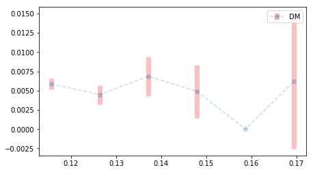

This note addresses the typical applied problem of estimating from data how a target "conversion rate" function varies with some available scalar score function -- e.g., estimating conversion rates from some marketing campaign as a function of a targeting model score. The idea centers around estimating the integral of the rate function; differentiating this gives the rate function. The method is a variation on a standard technique for estimating pdfs via fits to empirical cdfs.
Follow @efavdb
Follow us on twitter for new submission alerts!
Problem definition and naive binning solution
Here, we are interested in estimating a rate function, \(p \equiv p(x)\), representing the probability of some "conversion" event as a function of \(x\), some scalar model score. To do this, we assume we have access to a finite set of score-outcome data of the form \(\{(x_i, n_i), i= 1, \ldots ,k\}\). Here, \(x_i\) is the score for example \(i\) and \(n_i \in \{0,1\}\) is its conversion indicator.
There are a number of standard methods for estimating rate functions. For example, if the score \(x\) is a prior estimate for the conversion rate, a trivial mapping \(p(x) = x\) may work. This won't work if the score function in question is not an estimate for \(p\). A more general approach is to bin together example data points that have similar scores: The observed conversion rate within each bin can then be used as an estimate for the true conversion rate in the bin's score range. An example output of this approach is shown in Fig. 1. Another option is to create a moving average, analogous to the binned solution.
The simple binning approach introduces two inefficiencies: (1) Binning coarsens a data set, resulting in a loss of information. (2) The data in one bin does not affect the data in the other bins, precluding exploitation of any global smoothness constraints that could be placed on \(p\) as a function of \(x\). The running average approach is also subject to these issues. The method we discuss below alleviates both inefficiencies.

Fig. 1. Binned probability estimate approach: All data with scores in a given range are grouped together, and the outcomes from those data points are used to estimate the conversion rate in each bin. Here, the x-axis represents score range, data was grouped into six bins, and mean and standard deviation of the outcome probabilities were estimated from the observed outcomes within each bin.
{kind=link}
Efficient estimates by integration
It can be difficult to directly fit a rate function p(x) using score-outcome data because data of this type does not lie on a continuous curve (the y-values alternate between 0 and 1, depending on the outcome for each example). However, if we consider the empirical integral of the available data, we obtain a smooth, increasing function that is much easier to fit.
To evaluate the empirical integral, we assume the samples are first sorted by \(x\) and define
Next, the empirical integral is taken as
which approximates the integral
We can think of (\ref{3}) as the number of expected conversions given density-\(1\) sampling over the \(x\) range noted. Taking a fit to the \(\{(x_i, \hat{J}(x_i))\}\) values gives a smooth estimate for (\ref{3}). Differentiating with respect to \(x\) the gives an estimate for \(p(x)\). Fig. 2 illustrates the approach. Here, I fit the available data to a quadratic, capturing the growth in \(p\) with \(x\).
The example in Fig. 2 has no error bar shown. One way to obtain error bars would be to work with a particular fit form. The uncertainty in the fit coefficients could then be used to estimate uncertainties in the values at each point.
{kind=link}
Fig. 2. (Left) A plot of the empirical integral of the data used to generate Fig. 1 is in blue. A quadratic fit is shown in red. (Right) The derivative of the red fit function at left is shown, an estimate for the rate function in question, \(p\equiv p(x)\).
Example python code
The code snippet below carries out the procedure described above on a simple example. One example output is shown in Fig. 3 at the bottom of the section. Running the code multiple times gives one a sense of the error that is present in the predictions. In practical applications, this can't be done so carrying out the error analysis procedure suggested above should be done to get a better sense of the error involved.
%pylab inline
import numpy as np
from scipy.optimize import curve_fit
def p_given_x(x):
return x ** 2
def outcome_given_p(p):
return np.random.binomial(1, p)
# Generate some random data
x = np.sort(np.random.rand(200))
p = p_given_x(x)
y = outcome_given_p(p)
# Calculate delta x, get weighted outcomes
delta_x = x[1:] - x[:-1]
weighted_y = y[:-1] * delta_x
# Integrate and fit
j = np.cumsum(weighted_y)
def fit_func(x, a, b, c, d):
return a * x ** 3 + b * x ** 2
popt, pcov = curve_fit(fit_func, x[:-1], j)
j_fit = fit_func(x[:-1], *popt)
# Finally, differentiate and compare to actual p
p_fit = (j_fit[1:] - j_fit[:-1]) / delta_x[:-1]
# Plots
plt.figure(figsize=(10,3))
plt.subplot(1, 2, 1)
plot(x[:-1], j,'*', label='empirical integral')
plot(x[:-1], j_fit, 'r', label='fit to integral')
plt.legend()
plt.subplot(1, 2, 2)
plot(x[:-2], p_fit, 'g', label='fit to p versus x')
plot(x, p, 'k--', label='actual p versus x')
plt.legend()
{kind=link}
Fig. 3. The result of one run of the algorithm on a data set where \(p(x) \equiv x^2\), given 200 random samples of \(x \in (0, 1)\).